AI-платформа для управления расходами
Сотрудники регулярно тратят свои деньги на рабочие задачи: покупают инструменты, оплачивают подписки, бронируют билеты и жильё в командировках. Чтобы получить возмещение, нужно собрать подтверждающие документы, оформить заявку и пройти внутреннее согласование.
Процесс зависит от правил конкретной компании и обычно вовлекает нескольких человек: сотрудник собирает чеки и заполняет данные о расходе, менеджер проверяет обоснованность трат, а финансовая команда сверяет документы и суммы с внутренними регламентами.
Часть процесса живёт в специализированных системах, а часть остаётся за их пределами: в переписках, письмах и устных договорённостях.
Моя задача была разобраться в существующих сценариях и спроектировать единый опыт для всех участников процесса, отдав AI рутинные операции.
Сначала я предполагала, что главная боль сотрудников в долгом и неудобном оформлении заявок. Поэтому одна из первых гипотез была про ускорение этого процесса с помощью AI.
Но исследование показало: сама форма не всегда занимает много времени. Один из респондентов рассказал, что оформление заявки при собранных данных занимает одну-две минуты.
Сложности возникают на других этапах:
Сотрудник
Не всегда понимает, к какой категории отнести расход и какие данные необходимо указать.
Должен собрать чеки и подтверждающие документы.
Может не знать, допустим ли конкретный расход и какие ограничения действуют в компании.
Не всегда может самостоятельно повлиять на скорость обработки заявки.
Менеджер
Проверяет обоснованность расходов и соответствие внутренним правилам.
Проверяет документы, суммы и категории расходов.
Сверяет данные с внутренними правилами и бюджетами.
Уточняет информацию, если в заявке не хватает данных или документов.
Принимает решения по расходам, которые требуют дополнительного согласования.
Задача оказалась шире, чем автоматизация формы. Нужно было разобраться во всём жизненном цикле расхода и понять, на каких этапах AI действительно поможет.
Чтобы не строить решение на своих догадках, я провела исследование в несколько шагов: бенчмарк конкурентов, глубинные интервью, JTBD и CJM.
Так я посмотрела на процесс с разных сторон: что уже существует на рынке, как сотрудники и финансовые команды на деле работают с расходами и где спотыкаются.
Конкурентный анализ
Изучила четыре продукта: Expensify, Brex, SAP Concur и Ramp.
Смотрела дальше списка функций: на сценарии, структуру интерфейсов и то, как каждый продукт применяет AI в управлении расходами.
В рамках бенчмарка рассмотрела:
Загрузку чеков, распознавание документов и извлечение данных.
Автоматическое заполнение и категоризацию расходов.
Проверку расходов на соответствие корпоративным политикам.
Работу с лимитами, бюджетами и исключениями.
Создание, отправку и согласование заявок.
Поиск финансовой информации и взаимодействие с AI на естественном языке.
Представление результатов автоматической проверки и передачу спорных ситуаций человеку.
Отдельно разобралась, как продукты делят ответственность между пользователем и AI: что автоматизируется, что требует подтверждения и как система объясняет найденные проблемы.
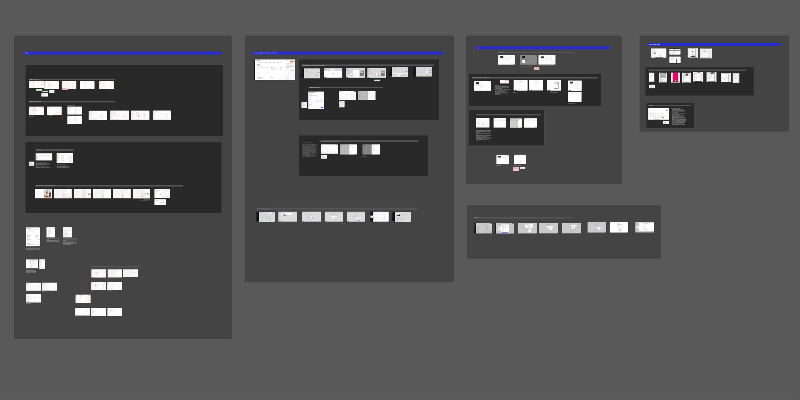
Рис. 1 — Бенчмаркинг: как строят процесс расходов Expensify, Brex, SAP Concur и Ramp
CustDev: исследование реальных процессов
Провела пять глубинных интервью с сотрудниками компаний, которые участвуют в процессе корпоративных расходов: оплачивают покупки, оформляют возмещения, согласовывают заявки или занимаются их финансовой обработкой.
Разбирала не только заполнение заявки, но и весь контекст: кто инициирует расход, как его оплачивают, какие документы собирают, как определяют категории, бюджеты и лимиты, кто проверяет заявку и почему её могут вернуть на доработку. Также смотрела, как устроены командировки и возмещение затрат, какие действия происходят в системе, а какие — вне её.
Обсуждали конкретные ситуации из опыта участников, чтобы отделить реальные сложности от предполагаемых. Например, заполнение заявки может занимать 1–2 минуты, если все данные уже известны, а часть решений о допустимости расходов принимается ещё до оформления — например, согласовывается с руководителем вне системы.
В результате получила представление о разных моделях процесса и поняла, что сценарии сильно зависят от типа расходов, структуры компании и распределения ответственности между участниками.
Рис. 2 — материалы кастдева: заметки интервью
JTBD: задачи пользователей и причины их возникновения
На основе интервью разложила пользовательские задачи через Jobs To Be Done.
Смотрела не на клики в интерфейсе, а на ситуации, в которых возникает потребность в продукте: сотрудник оплачивает рабочий расход, собирает документы после командировки, проверяет, допустима ли покупка, ждёт возмещения.
Отдельно анализировала задачи разных участников:
Сотрудник: подтвердить рабочий расход и получить возмещение без лишних действий и повторных уточнений.
Менеджер: оценить обоснованность затрат и принять решение по заявке.
Финансовая команда: проверить документы и суммы, убедиться в соответствии внутренним правилам и обработать выплату.
Так я перешла от списка функций к пониманию, какой результат нужен каждому участнику и какую проблему продукт решает на конкретном этапе.
CJM: путь расхода от оплаты до возмещения
Чтобы увидеть процесс целиком, я прошлась по всему пути расхода, от его возникновения до финальной обработки.
В CJM выделила основные этапы взаимодействия:
Возникновение рабочего расхода.
Оплата и сбор подтверждающих документов.
Подготовка и отправка заявки.
Проверка и согласование.
Уточнение информации при необходимости.
Обработка выплаты и завершение процесса.
На каждом этапе смотрела, что делает пользователь, зачем, с кем взаимодействует и где может споткнуться.
Отдельно учитывала различия сценариев. Командировку может оплачивать сама компания, а может сотрудник с последующим возмещением. Если это аванс, нужно отчитаться за потраченные средства; если возмещение своих трат, всё начинается со сбора подтверждающих документов.
Результат: корпоративные расходы стали видны как сквозной процесс, а не отдельная форма заявки, и стало ясно, в каких точках автоматизация поможет каждой роли.
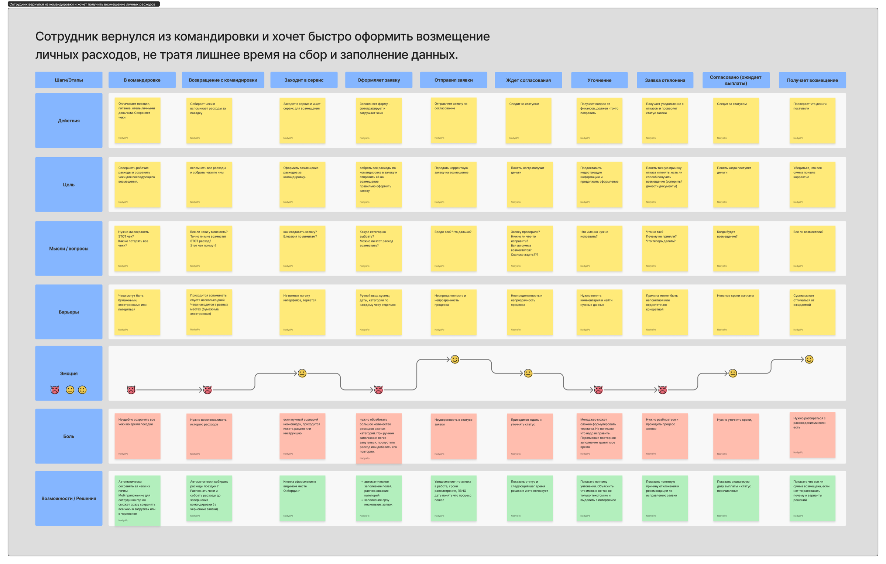
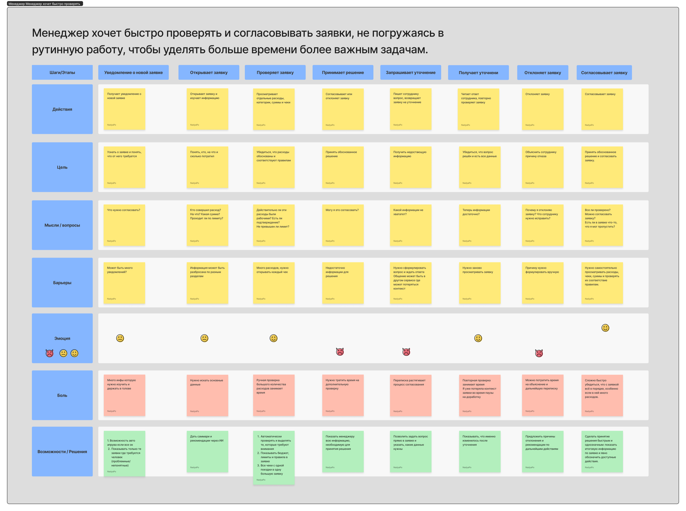
1. Заполнение формы не всегда является основной проблемой.
В одном из исследованных процессов заявка оформлялась за одну-две минуты, когда все сведения были под рукой. Это заставило пересмотреть фокус на ускорении заполнения.
2. Часть сложностей возникает ещё до создания заявки.
Сотруднику нужно понимать, к какому проекту или центру финансовой ответственности отнести расход, какую статью затрат выбрать и допустима ли покупка по правилам компании. При этом часть решений может заранее согласовываться с руководителем вне системы.
3. Процесс зависит от типа расходов и внутренних правил компании.
В исследованных сценариях встречались разные модели: возмещение уже оплаченных расходов, командировочные расходы и выдача аванса с последующим отчётом. В одних компаниях поездку и бронирование организует сама компания, в других сотрудник сначала оплачивает расходы самостоятельно.
Поэтому универсальный сценарий оформления не может учитывать все ситуации без дополнительной настройки.
4. Сбор чеков во время командировки требует отдельного внимания.
В одном из исследованных процессов уже использовались черновики, в которых сотрудник мог постепенно собирать чеки и дополнять заявку во время поездки. Это позволяло не оформлять все расходы сразу.
5. Значительная часть ручной работы может приходиться на проверку после отправки заявки.
Менеджеры и финансовые специалисты проверяют документы, суммы и соответствие расходов правилам. Например, могут обнаружить отсутствие чека, несоответствие данных или необходимость изменить категорию расхода.
Здесь AI может дать больше всего: заранее проверить документы и подсветить возможные проблемы до того, как заявка уйдёт на ручную проверку.
После исследования я пересмотрела изначальную гипотезу, что главная ценность продукта в создании заявки через AI-чат.
Интервью не подтвердили, что именно заполнение формы является главным источником трудностей. При этом обнаружились другие точки приложения усилий: подготовка информации, работа с документами, проверка допустимости расходов и обработка заявок.
Я выделила несколько направлений для проектирования:
Подготовка заявки: распознавание чеков, извлечение данных и предварительное заполнение полей.
Проверка расходов: поиск отсутствующих документов, несоответствий и возможных нарушений внутренних правил.
Работа с исключениями: объяснение причин замечаний и передача спорных ситуаций на рассмотрение ответственному сотруднику.
Контроль процесса: отображение текущего статуса, истории изменений и следующих действий.
Отдельно заложила правило: неоднозначные решения AI не принимает сам. Если система находит превышение лимита или данных не хватает для проверки, она объясняет причину и передаёт вопрос ответственному человеку.
Я спроектировала сценарии для трёх ролей: сотрудника, менеджера и финансовой команды. Данные у всех общие, но задачи и глубина детализации у каждой роли свои.
Рабочее пространство сотрудника
Главная страница должна помогать сотруднику быстро перейти к основным действиям и контролировать свои расходы.
В рабочее пространство вошли:
Мои заявки с суммами и текущими статусами.
Черновики для сохранения незавершённых заявок.
Возможность загрузить чек и начать оформление расхода.
AI-помощник для работы с документами и заявками.
Информация о расходах и ходе их обработки.
Главный принцип: сначала сохранить чек, а к оформлению заявки вернуться позже. Это важно, когда расходы копятся постепенно, как в командировке.
Создание заявки с помощью AI
Проработала сценарий, в котором сотрудник загружает чек, а AI извлекает из него информацию и помогает подготовить заявку.
После обработки пользователь видит распознанные данные и может проверить или отредактировать их перед отправкой.
В сценарии предусмотрены разные состояния:
Загрузка документа.
Обработка и распознавание данных.
Успешное извлечение информации.
Ошибка распознавания или отсутствие обязательных данных.
Необходимость уточнения.
Проверка и подтверждение заявки.
Важно было развести действия AI и пользователя. Распознанный чек ещё не значит, что заявка создана или одобрена: сотрудник сам проверяет результат и подтверждает отправку.
Проверка расходов и согласование
Для менеджера спроектировала рабочее пространство со списком заявок и возможностью перейти к подробной проверке каждой из них.
Внутри заявки, помимо суммы и документов, важны результаты предварительной проверки:
Какие данные извлечены из документов.
Соответствует ли расход установленным правилам.
Есть ли превышение лимита.
Какие документы отсутствуют.
Какие позиции требуют дополнительного внимания.
Если AI находит проблему, он объясняет, что именно не так, а не просто показывает предупреждение.
Например, при превышении лимита на проживание менеджер может увидеть размер превышения, состав расходов и позиции, которые не подлежат возмещению. После этого он самостоятельно принимает решение: согласовать заявку, отклонить её или запросить уточнение у сотрудника.
Работа с заявкой и уточнениями
Отдельно проработала сценарий взаимодействия сотрудника и менеджера после отправки заявки.
Если информации недостаточно, менеджер может запросить уточнение и оставить комментарий с конкретным перечнем необходимых данных или документов.
Сотрудник получает запрос непосредственно в заявке, может ответить на комментарий и приложить недостающие документы.
Так обсуждение остаётся связанным с конкретным расходом, а участникам не приходится искать контекст в сторонней переписке.
Статусы и история заявки
Для сотрудника важно понимать, что происходит с заявкой после отправки, а для менеджера и финансовой команды важно видеть, на каком этапе требуется их участие.
Поэтому я проработала жизненный цикл заявки с отдельными состояниями: черновик, ожидание согласования, необходимость уточнения, ожидание выплаты, выплачено и отклонено.
Помимо статуса, в заявке хранится история действий и обсуждение: так видно, как шла обработка и почему приняли именно такое решение.
Собрала несколько вариантов визуального направления и выбирала: оформление должно помогать работать с заявками и документами, а не перетягивать внимание на себя.
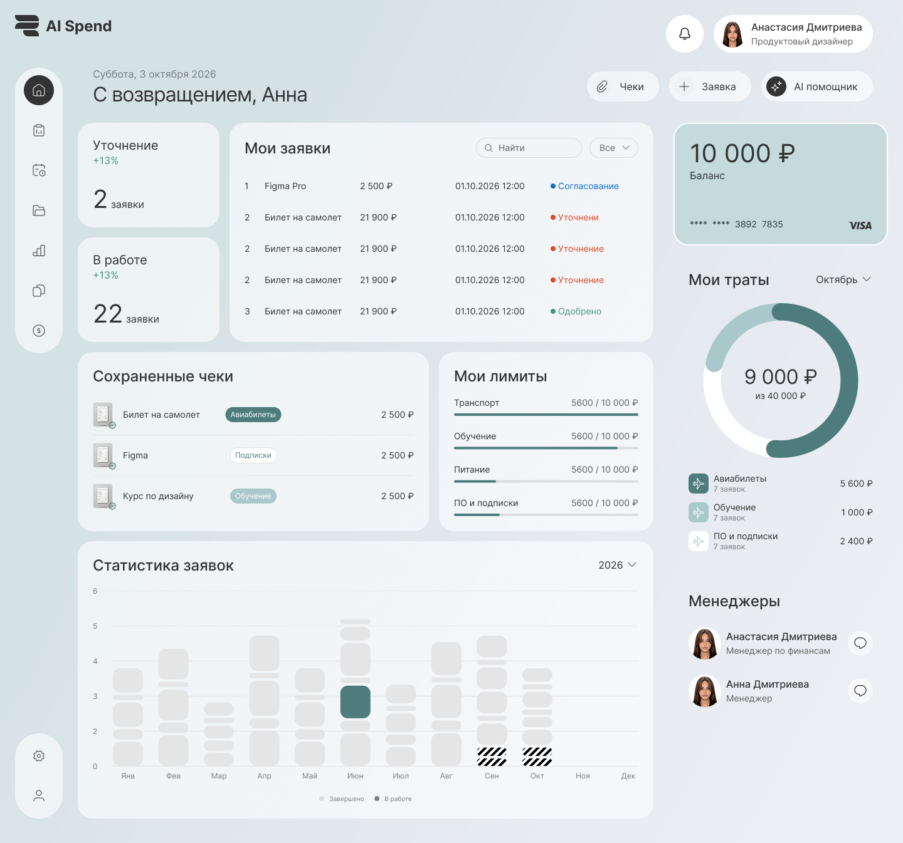
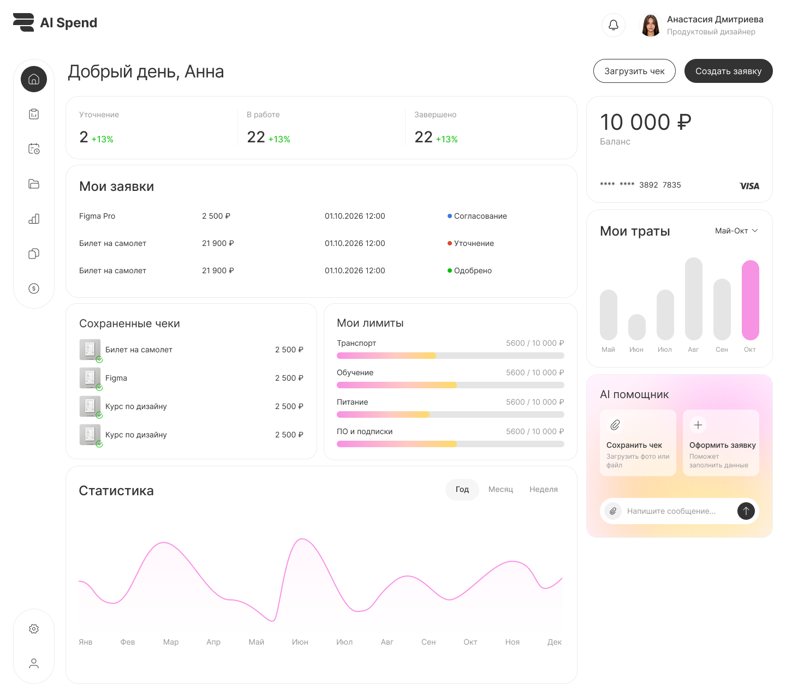
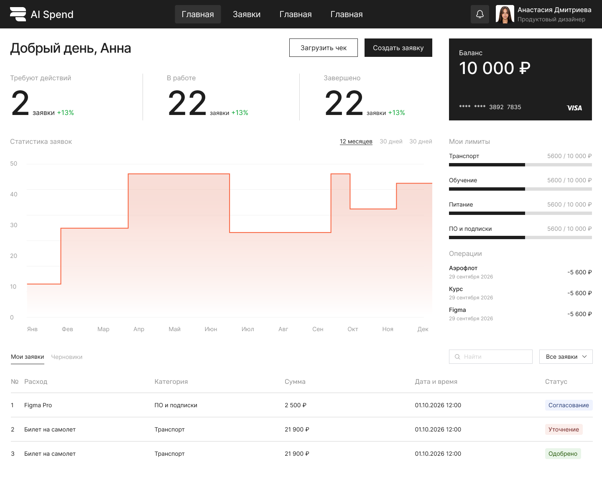
После сравнения трёх направлений выбрала второй концепт. Он оказался самым сбалансированным: интерфейс остаётся спокойным и не перетягивает внимание на себя, при этом ключевые элементы вроде статусов, сумм и действий считываются быстро. Это направление проще всего масштабировать: на его основе можно собирать остальные экраны сервиса и расширять дизайн-систему без потери единого стиля.
Проверила на вайфреймах структуру ключевых экранов и логику сценария — до того, как рисовать визуал.
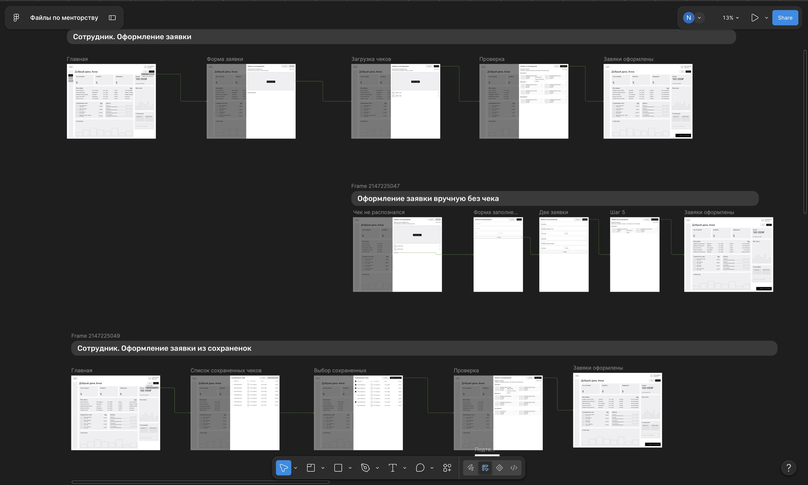
Рис. 3 — вайфреймы: структура экранов и логика сценария
По итогам исследования и проектирования у меня сложились сценарии и интерфейсы AI-платформы для управления корпоративными расходами.
Главное изменение в понимании задачи: вместо ускорения одной формы я рассмотрела весь путь, от подготовки документов до проверки и выплаты.
За время проекта:
Провела пять глубинных интервью и изучила реальные сценарии работы с корпоративными расходами.
Проанализировала четыре конкурентных продукта и подходы к применению AI в финансовых процессах.
Использовала JTBD и CJM для анализа задач пользователей и сквозного процесса возмещения расходов.
Пересмотрела первоначальные гипотезы на основе результатов исследования.
Выделила направления применения AI на разных этапах работы с расходами.
Спроектировала сценарии для сотрудника, менеджера и финансовой команды.
Проработала создание заявки, распознавание документов, проверку расходов, согласование и обработку уточнений.
Ключевой результат работы: продукт вырос из идеи AI-помощника для заполнения формы в комплексный подход. AI здесь помогает подготовить данные, проверить их, объяснить возможные проблемы и снять часть ручной работы.
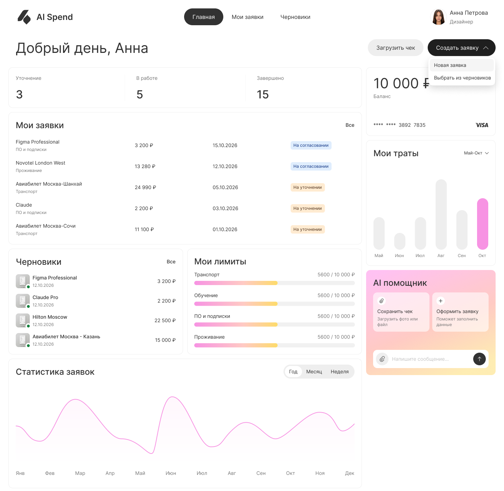
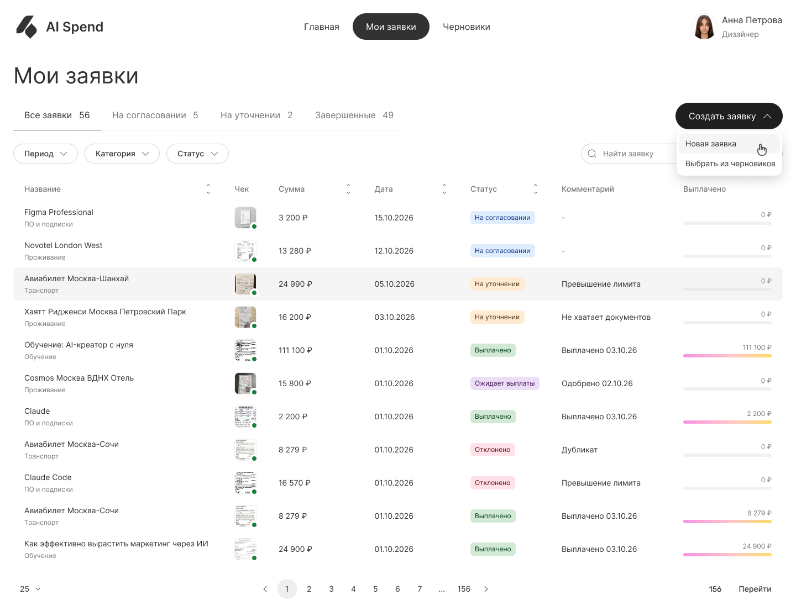
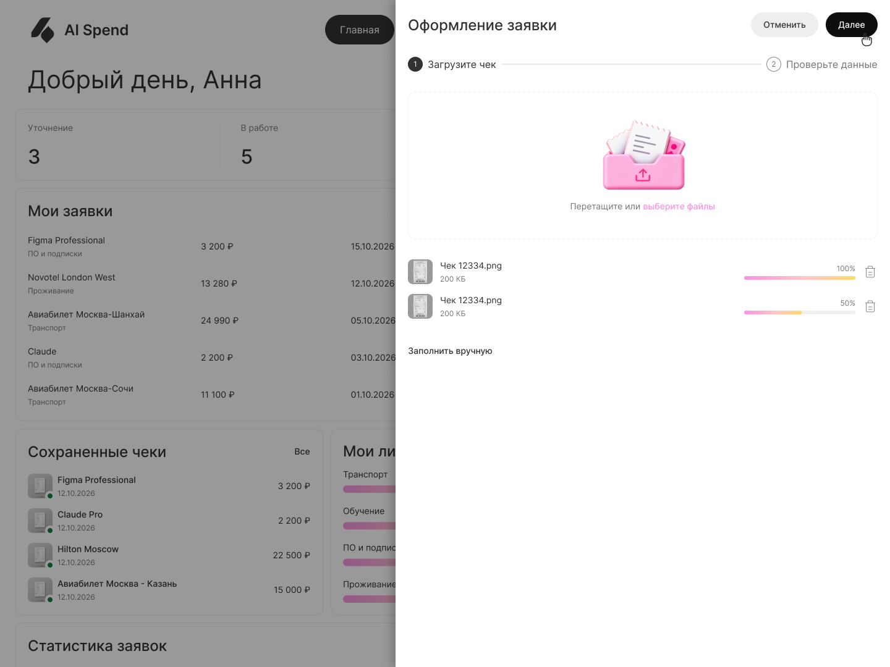
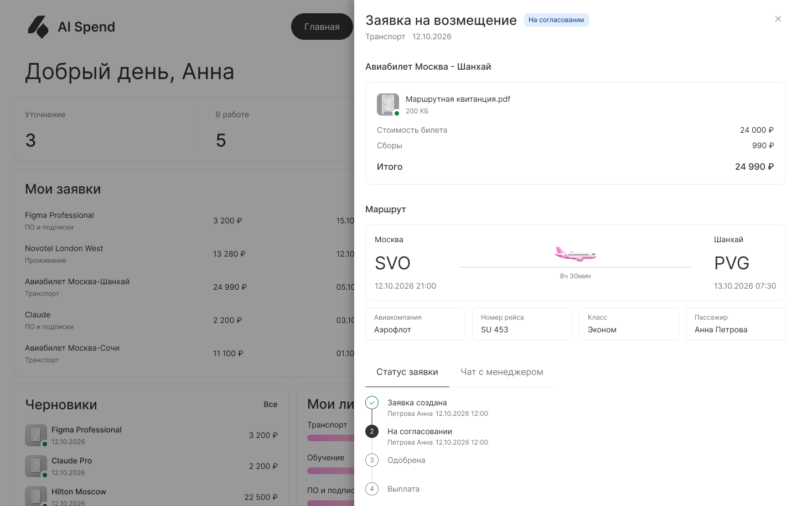
Не стоит принимать первоначальную формулировку проблемы за данность. На старте казалось, что пользователям нужно быстрее заполнять заявки. Но интервью показали, что в некоторых компаниях это уже занимает всего несколько минут. Поэтому я сместила фокус на другие этапы процесса.
AI должен решать конкретную задачу, а не просто присутствовать в интерфейсе. Распознавание документов само по себе не гарантирует ценности. Гораздо важнее, что происходит с данными дальше: как они проверяются, какие ошибки обнаруживаются и как система помогает пользователю принять решение.
Сложные B2B-продукты нужно проектировать с учётом всех участников процесса. Сотрудник, менеджер и финансовая команда работают с одними расходами, но решают разные задачи. Хороший опыт учитывает эти различия и делает передачу работы между ролями прозрачной.

Оплата обучения
Сервис «Мои финансы»: 83% платежей через сервис, тикеты −47%, медиана 4,5 мин.

Расписание университета
100 тыс+ пользователей, −70% обращений, 12 000 переходов в онлайн-занятия.

Конструктор курсов в LMS
1875 курсов создано, 31 подразделение, 73,3% доходят до публикации.

Обучение в LMS
4 итерации от MVP ДПО до университетского цикла с семестрами и пересдачами.